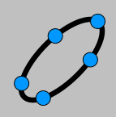

 Aritmética y Álgebra con Geogebra - Ignacio Larrosa Cañestro (Grupo XeoDin)
Mínimo común múltiplo, máximo común divisor y algoritmo de Euclides
Suma de una progresión geométrica de razón 1/4 con cuadrados
Suma de una progresión geométrica de razón 1/4 con triángulos
Comparación de las medias Aritmética, Geométrica, Cuadrática y Harmónica (1)
Comparación de las medias Aritmética, Geométrica, Cuadrática y Harmónica (2)
Medias ponderada, precio de una mezcla, temperatura de equilibrio ...
|
|
|